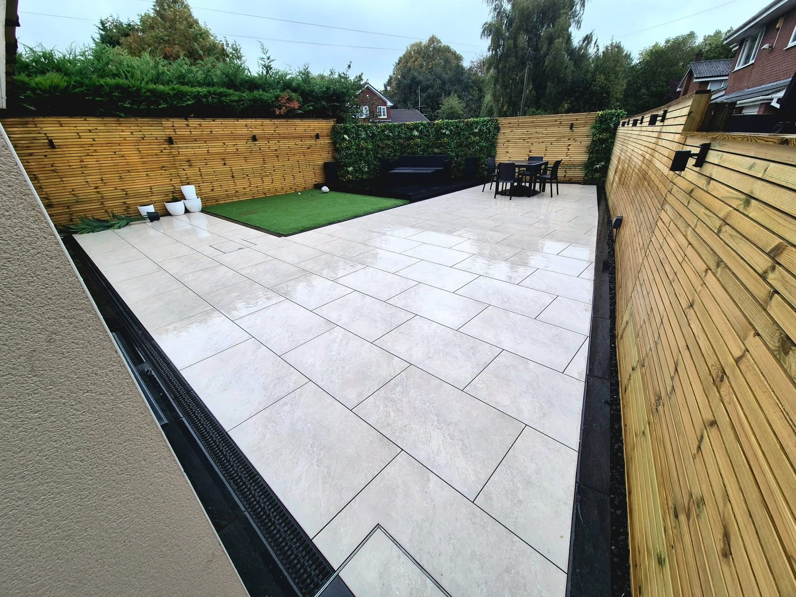
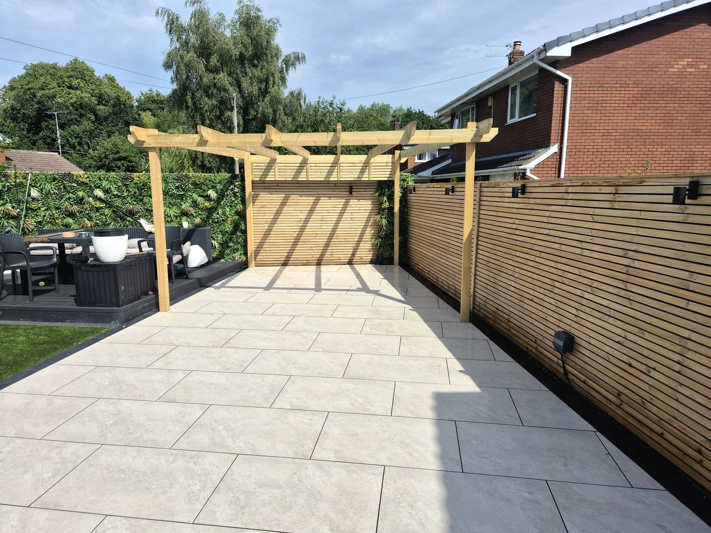
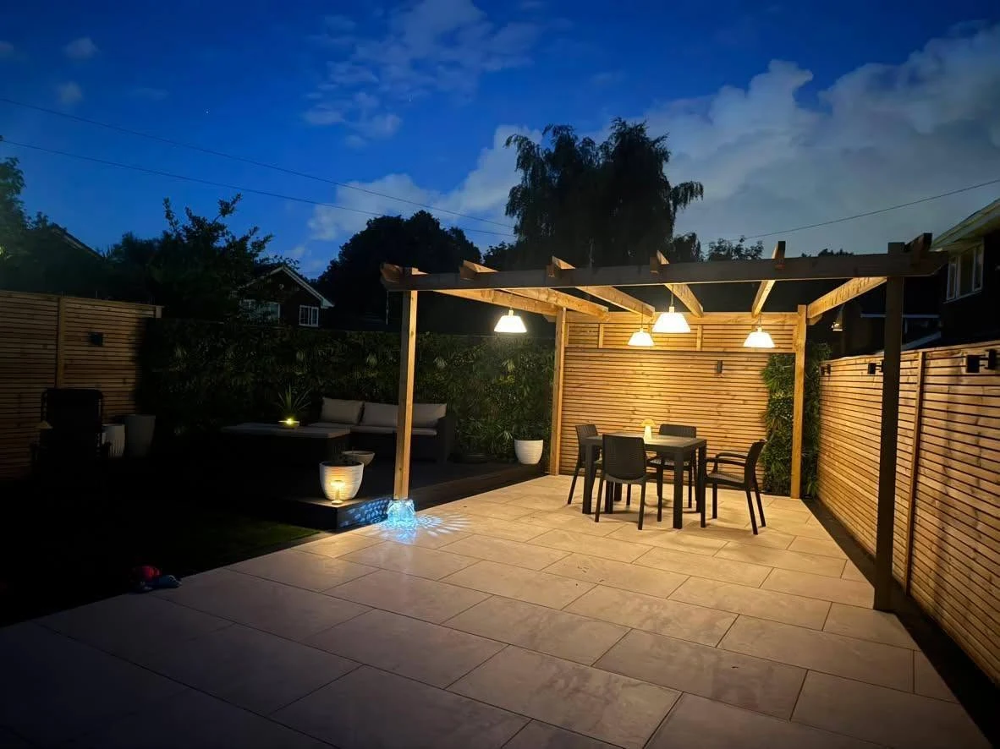

PRESTON & SURROUNDING AREAS
Outdoor living.
Beautifully built.
Patios, paving and garden spaces that bring your outdoor plans together. Preston, Chorley, Buckshaw and Leyland.
Preston basedLandscapes & pavingFree quotes
PRESTON BASED. OUTDOOR FOCUSED.
Space to unwind.
Details to enjoy.
A patio for summer evenings. A pergola that defines your favourite corner. A garden that feels connected from the back door to the boundary.
LNC Landscapes & Paving brings outdoor ideas together across Preston, Chorley, Buckshaw and Leyland. Explore our project photos and videos, then tell us what you would like to change about your space.
Discover our approach →

SEE THE DIFFERENCE
The same corner.
A fresh outlook.
A paving refresh beside the house, shown before and after. New paving gives the space a cleaner finish while keeping the existing setting.
Tap either photo to see the complete image.
Explore our projects →BEHIND THE FINISH
Watch us work.
A closer look at our landscaping and paving projects. Press play to see the details.
REAL PROJECTS
Outdoors.
Made more inviting.
WHAT WE CREATE
One garden.
Plenty of possibilities.
Landscaping, paving and outdoor features shaped around the space you have.
Patios & paving
Bring your garden together with paving that suits the space, from a clean contemporary patio to paths, borders and a welcoming entrance.
Explore this service →Garden landscaping
Create an outdoor space with room to relax, gather and enjoy. We bring paving, lawns, timber features and changes in level together around your plans.
Explore this service →Fencing & screening
Fencing and timber screening bring privacy, structure and a finished edge to a garden. Discuss your layout, preferred style and access with us.
Explore this service →Pergolas & decking
A pergola or deck can define a comfortable place to sit and help connect the different parts of a garden. Explore our timber features and garden seating areas.
Explore this service →Lawns & artificial grass
Lawns and artificial grass add a softer area alongside paving and seating spaces. Discuss the layout and the finish that works for the way you use your garden.
Explore this service →Groundworks & preparation
Preparation is part of every landscaping project. Before the paving goes down, we discuss the site, levels, access and drainage requirements for the space.
Explore this service →PRESTON & SURROUNDING AREAS
Local spaces.
Individual ideas.
Preston based, covering Chorley, Buckshaw and Leyland. Send your postcode so we can discuss your project and confirm availability.
Discuss your project →YOUR NEXT OUTDOOR PROJECT
Tell us what
you have in mind.
Landscaping and paving enquiries for Preston, Chorley, Buckshaw and Leyland. Send your postcode and a few details to get started.
Prefer email? info.lnclandscapes@mail.com
Photographs of the work and access are always helpful. You can attach them to your message before sending.